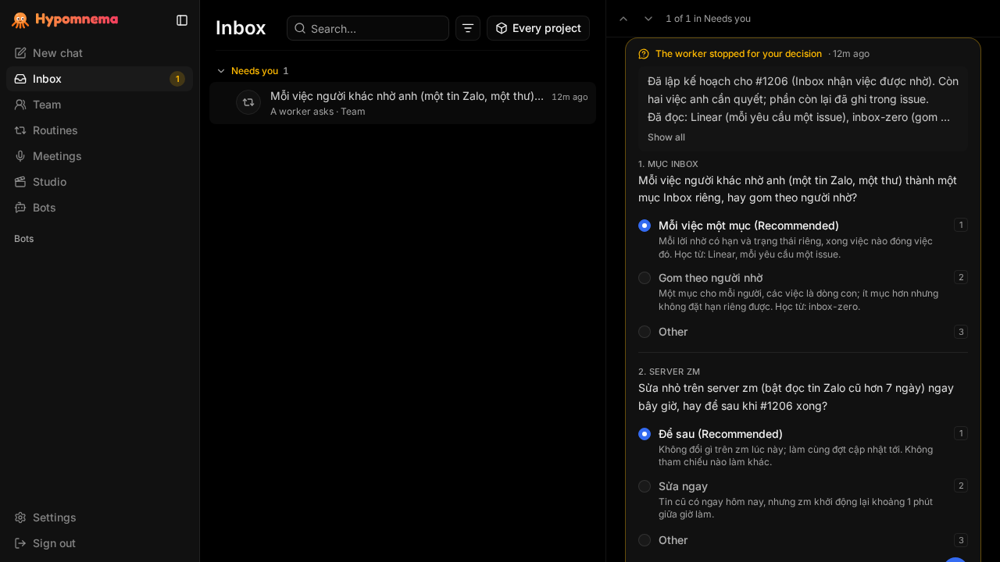
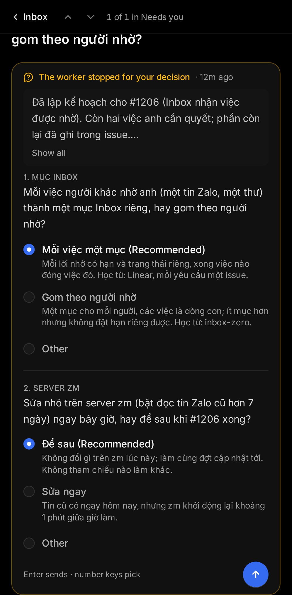
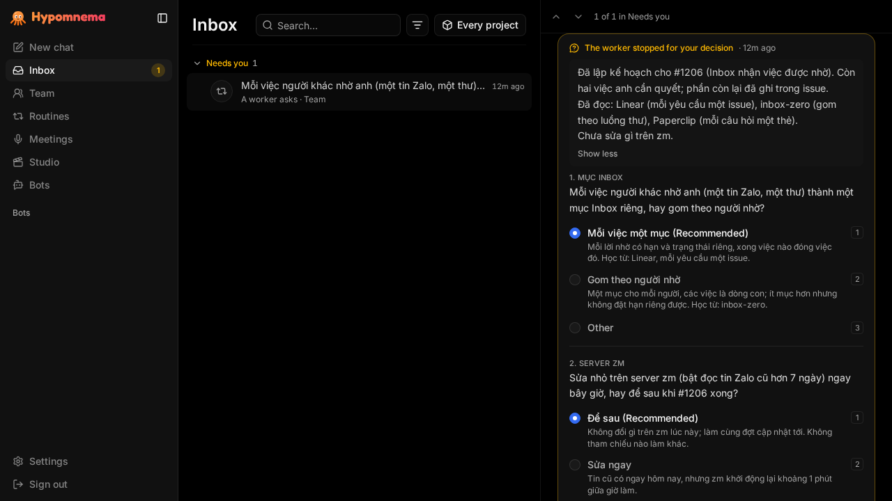
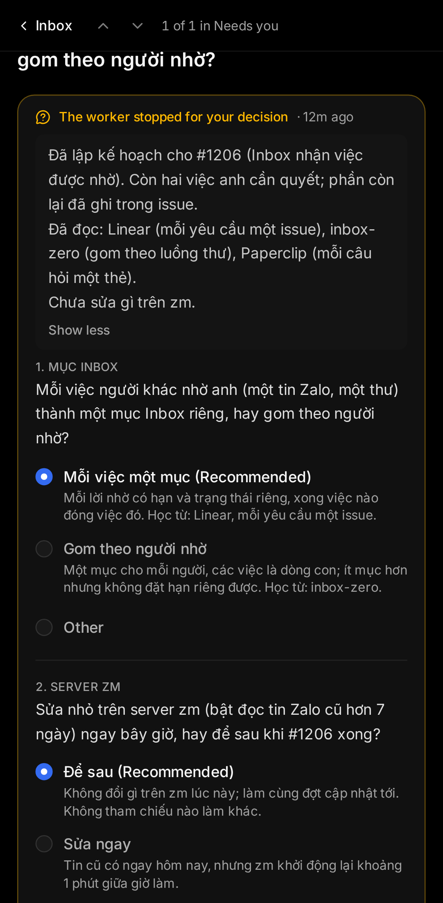
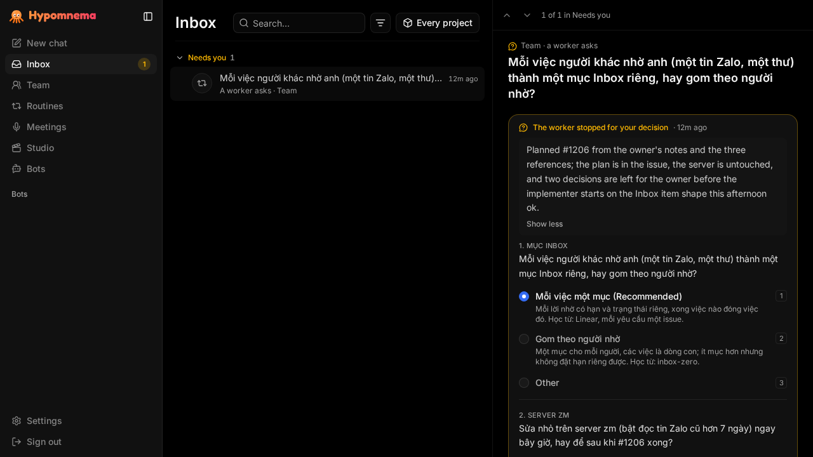
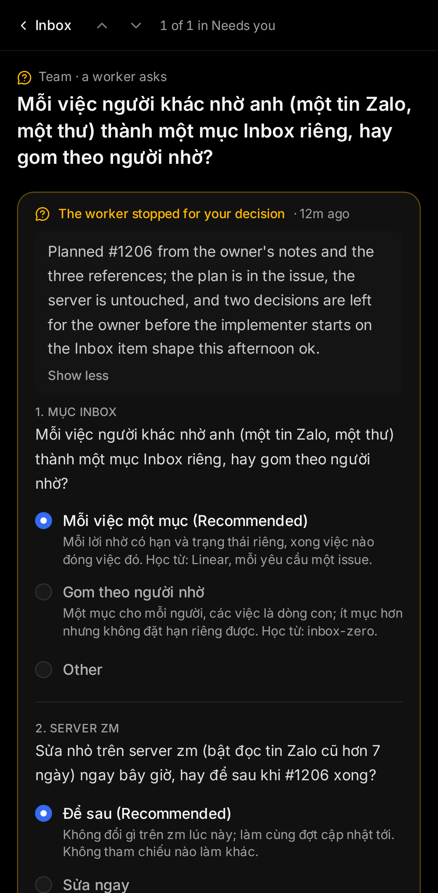
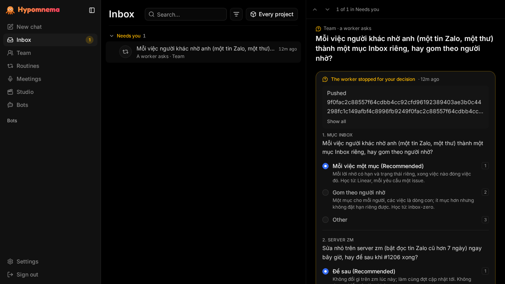
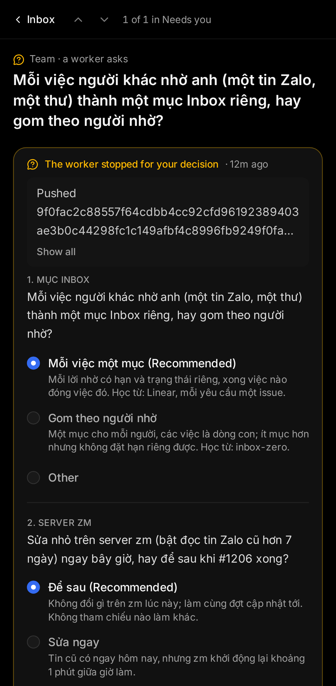
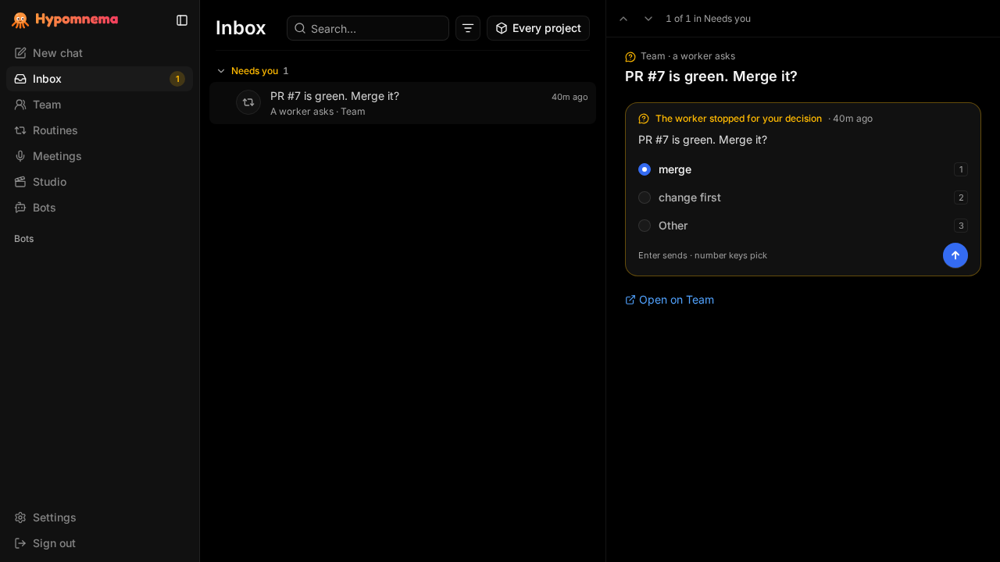

Issue #1219: a worker's decision stands alone
Screenshots from web/tests/inbox-1219.spec.ts (Playwright, Desktop Chrome and Pixel 7), the Inbox with a faked client API.
1. A Gate of two decisions: the worker's summary above, each decision under its header, each option with its description

Desktop

Phone
2. The summary opened with "Show all"

Desktop

Phone
2b. A one-line summary of 227 characters (review of PR #1228): three lines measured on the page, opened with "Show all"

Desktop, opened

Phone, opened
2c. A summary with a long unbroken string (a SHA, review round 2): it wraps inside the card and opens with "Show all"

Desktop

Phone
3. A Gate asked before (one question, bare labels): main and this branch, byte-identical PNGs
 main (3908054d), desktop; the API gives a Gate asked before no summary, so none shows
main (3908054d), desktop; the API gives a Gate asked before no summary, so none shows

this branch, desktop
 main, phone
this branch, phone
main, phone
this branch, phone